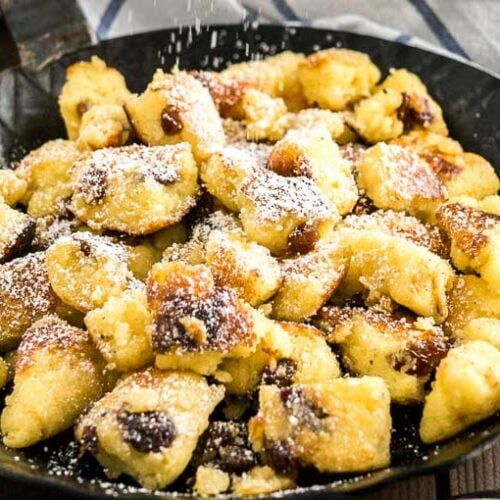

Kaiserschmarrn

Description
"Schmarrn" is the austrian and bavarian desription of a meal which is being cut
into small pieces and scrambled during its preparation. While those dishes are mostly
sweet, there are also is a salty variant containing potatoes.
Kaiserschmarrn (named after Kaiser Franz Joseph I) consists
of sliced pancakes, has lots of variations and is one of the most well known
dishes of austria.
Ingredients (2 portions)
- 250ml milk
- 150g flour
- 3 eggs
- 20g sugar
- 1 bag of vanilla sugar
- 25g butter
- salt
- raisins, powdered sugar (as required)
- oil
Directions
- Separate egg yolks and put into wide bowl. Put egg white into tall cup.
- Add sugar, vanilla sugar, salt and milk into bowl. Add flour through sieve
to prevent chunks. Let dough soak for a moment.
- Meanwhile whisk egg white until stiff. Carefully stir raisins and egg white into dough.
- Fry half of butter in pan at high heat. Add half of dough, bake until auburn.
Flip side, bake auburn as well. Afterwards use spatula to chop baked dough into
small pieces.
- Continue baking from all sides until done.
- Repeat procedure for other half of ingredients.
Apple sauce is a great supplement for your Kaiserschmarrn!
Back to overview